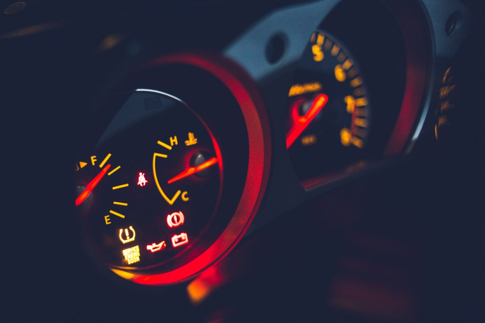

Home / Battery and electrical
Battery Light On While Driving: What It Means and What to Do
Quick answer
A red battery light while driving means the charging system isn't keeping the battery topped up, usually because of a failing alternator or a slipping or broken drive belt. Switch off non-essential electrics, keep the engine running and drive to a safe place or workshop. Stop at once if the steering gets heavy or the temperature gauge climbs.

The red battery light doesn't mean the battery is dead. It means the charging system isn't doing its job, and the car is running off the battery alone.
When the battery light comes on, I check the alternator and the drive belt before I blame the battery. I've seen a battery replaced for nothing because the real problem was an alternator that wasn't charging properly.
What the light actually means
While the engine runs, the alternator generates power and recharges the battery. If the light comes on, the alternator or the way it's driven or connected isn't delivering enough. The battery then supplies everything until it's empty, so you may have limited time.
Common causes
A failing alternator
The most common cause. Worn internal parts or a bad voltage regulator stop it charging.
A loose or broken drive belt
On many cars one belt drives the alternator and other parts. If it slips or breaks, charging stops, and you may also lose power steering or see the temperature rise.
Loose or corroded battery connections
A poor connection can stop current flowing even if the alternator is fine.
Wiring or fuse problems
A damaged wire or blown fuse in the charging circuit can trigger the light.
A worn-out battery
Sometimes the battery is the issue, though a failing battery more often shows up as slow starting.
What to do when it comes on
- Don't panic. You usually have some time.
- Switch off non-essentials: air conditioning, heated seats, stereo, rear heater.
- Keep the engine running. Switching off may mean it won't restart.
- Drive to the nearest safe place or workshop.
- If the steering gets heavy or the temperature gauge climbs, pull over and stop at once. That points to a broken belt.
Safety note. Don't continue a long journey with the light on. If it's night or raining, the headlights and wipers will drain the battery faster.
A squealing noise when you start the engine often means the drive belt is slipping. See Squealing Noise When Starting a Cold Car for how to inspect it. If the car won't restart after you've stopped, How to Jump-Start a Car Safely explains the safe way to get going again.
Quick checks once you've stopped
- With the engine off, look at the drive belt. Is it there, and not frayed?
- Check the battery clamps are tight and not crusted with corrosion.
- If you have a multimeter, measure the battery with the engine running. About 13.7 to 14.7 V means it's charging. Around 12 V or lower means it isn't.
When the light flickers
A light that comes on at idle and goes off with revs often points to a weak alternator or a slipping belt. Treat it as an early warning and get it looked at.
The method for measuring resting, cranking and charging voltage is in How to Test a Car Battery With a Multimeter. If the car also clicks without starting, compare with Car Clicks But Won't Start: Battery or Starter?
Don't just replace the battery
A new battery won't fix a bad alternator, and it will drain just the same. Test the charging system first. Many parts shops will do this for free.
Prevention
- Have the drive belt inspected at each service
- Keep battery terminals clean and tight
- Replace batteries that are four or five years old before winter
- Act on any dim lights or slow starts early
FAQ
Can I drive with the battery light on?
Only for a short distance. The car is running on the battery alone, so it will eventually stall. Switch off non-essential electrics and head for a safe place or a workshop.
Does the battery light mean my battery is bad?
Not usually. It points to the charging system: the alternator, the drive belt, the wiring or a poor connection. A good battery can't make up for a charging fault for long.
Why does the battery light flicker at idle?
Often a weak alternator or a slipping belt. The light goes out when the revs rise and the alternator spins faster. Treat it as an early warning.
How long can I drive with the battery light on?
It varies with the battery's condition and the electrical load, from a few minutes to perhaps half an hour. Don't rely on it, especially at night or in the rain.
Will a new battery fix the battery light?
Only if the battery really was the fault. If the alternator or belt is the problem, a new battery will drain just the same.
This guide is general information based on personal experience, not professional advice. Check your own vehicle's manual for exact specs and read the disclaimer before starting any job.